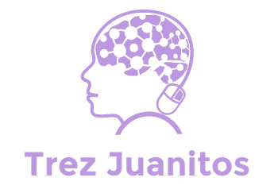

<ion-app>

  <ion-menu side="start" menuId="first" contentId="content" [swipeGesture]="false">
    
    <div class="logoplaceholder">
      
    </div>
    
    <ion-content color="white" mode="md">  
      
      <ion-menu-toggle auto-hide="true">
        <ion-list lines="none">
          <ion-item routerLink="/">
            <ion-icon name="home" slot="start"></ion-icon>
            <ion-label>Home</ion-label>
          </ion-item>
          <ion-item routerLink="/profile">
            <ion-icon name="person-circle" slot="start"></ion-icon>
            <ion-label>Profile</ion-label>
          </ion-item>
          <ion-item>
            <ion-icon name="log-out" slot="start"></ion-icon>
            <ion-label>Logout</ion-label>
          </ion-item>
        </ion-list>
      </ion-menu-toggle>

      <p class="appinfo poppins">© Todonato 2021 | v1.0</p>

    </ion-content>   
  </ion-menu>  

  <ion-router-outlet Id="content"></ion-router-outlet>

</ion-app>
